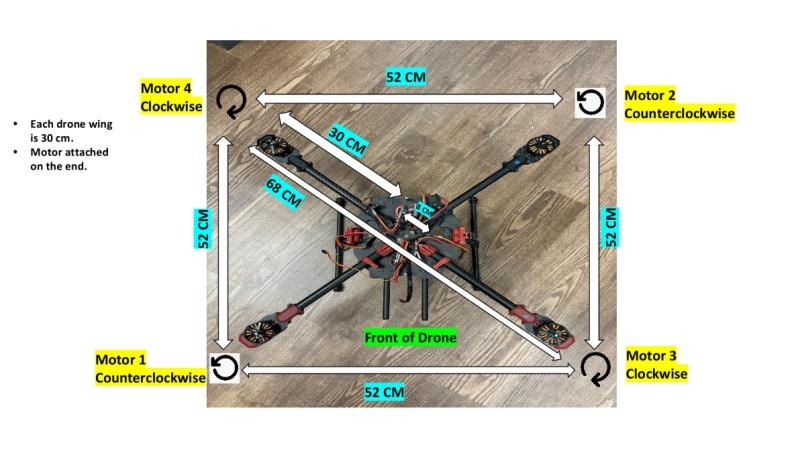
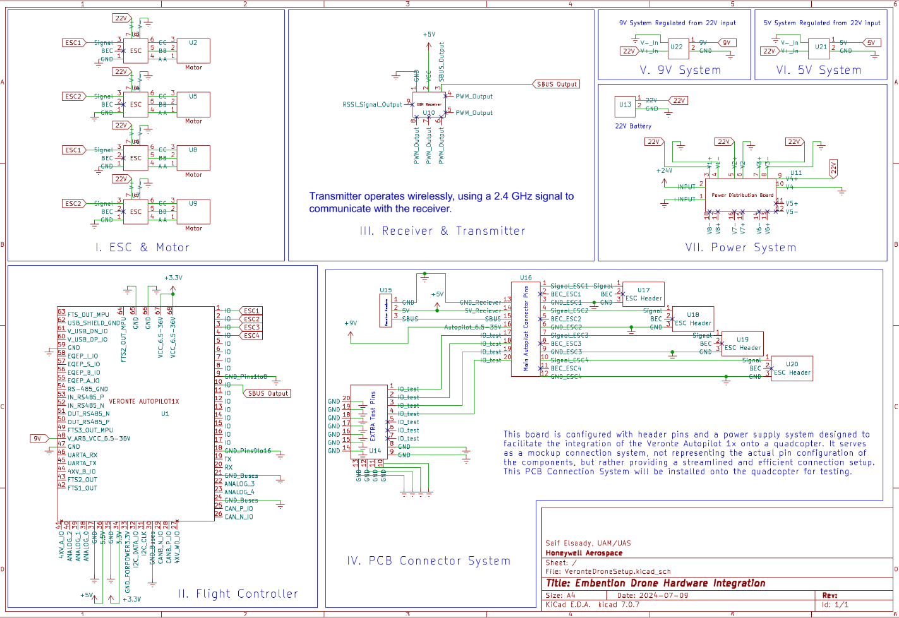
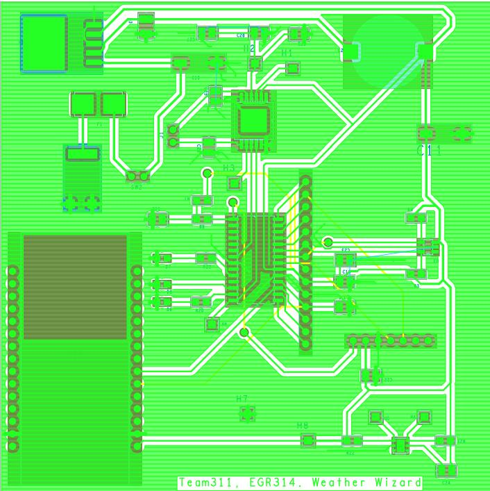
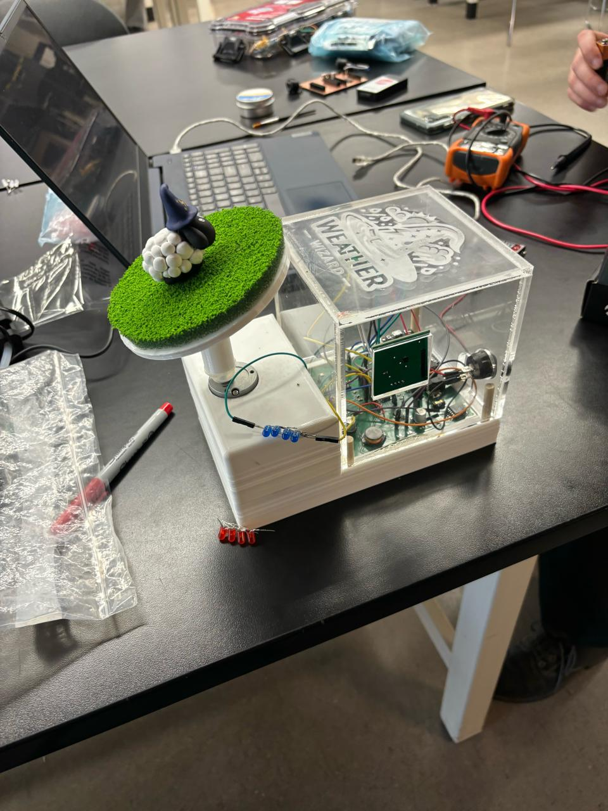
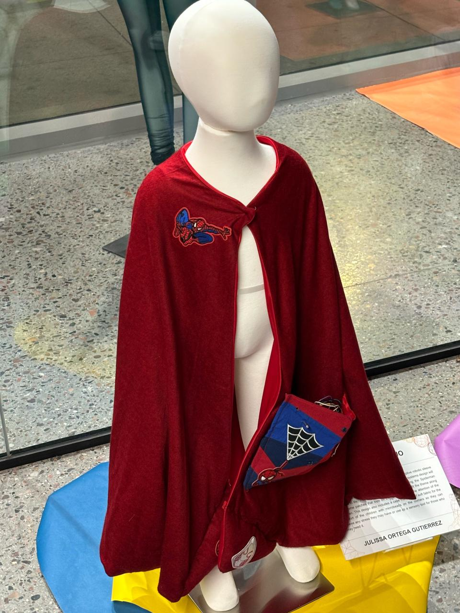
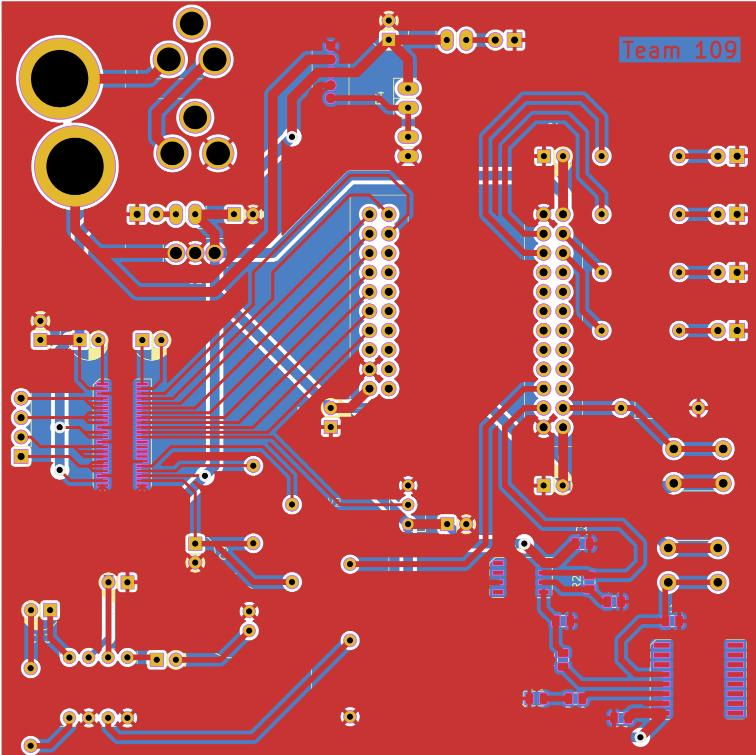
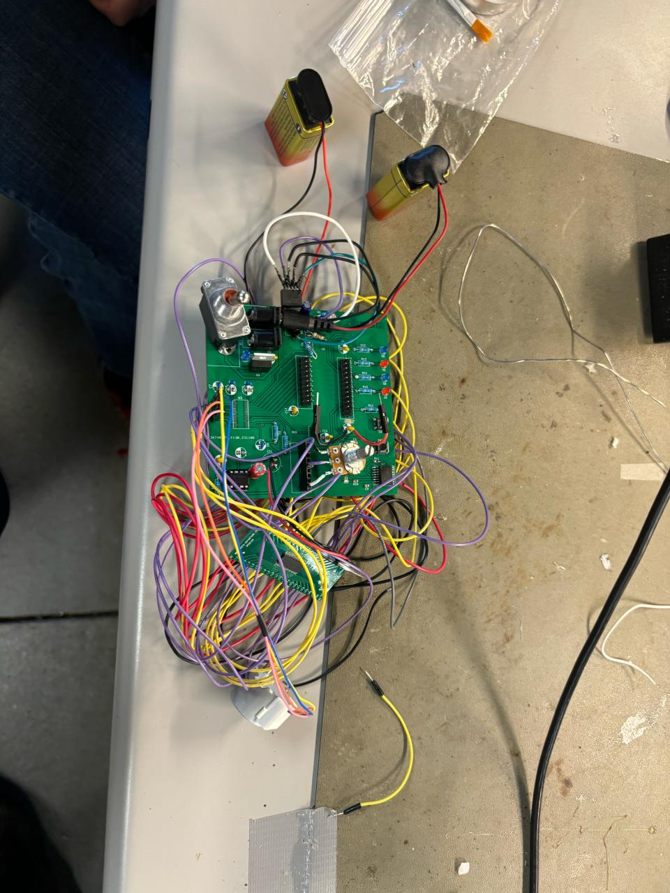

Portfolio
Hi, I'm Saif Elsaady
🎓 Education
- MS, Electrical & Computer Engineering (AI/ML), ASU — May 2026
- BSE, Electrical Systems Engineering, ASU
- BS, Data Science (Mathematics), ASU
🌐 Socials
🚀 Projects
🛠 Hardware Experience
-
🔧 Flight Controller Development – Modeled IMU data using Kalman filtering, assisted with sensor fusion algorithms, and validated performance through real-world UAV testing.
- Cleaned and visualized IMU data in MATLAB using Kalman filtering to support performance evaluation.
- Researched aerospace specs and datasheets to inform design accuracy during subsystem development.
- Assisted in integrating sensor fusion logic and PCB testing workflows for increased system reliability.
- Managed project timeline with Gantt charts and Git version control to meet client milestones.


-
🔧 UAV Hardware Integration – Designed power and ESC connection systems using a custom PCB, configured Veronte Autopilot, and optimized layout for signal integrity.
- Integrated Veronte Autopilot with GCS for stable flight communication.
- Engineered power conversion from 22V to 9V and 5V for subsystem reliability.
- Optimized system for weight balance and ESC thermal response.
- Verified signals and outputs through bench testing and signal tracing.
-
🔧 Weather Station – Developed a mobile PCB with I2C/SPI sensors, power-efficient architecture, and field-tested calibration for environmental monitoring.
- Built environmental sensor array using temperature, pressure, and wind modules.
- Developed a power-saving design using switching regulators and rechargeable cells.
- Designed the PCB in Cadence and passed DRC checks before fabrication.
- Performed accuracy tests in varied conditions to verify sensor readings.
-
🔧 Adaptive Apparel PCB – Built a BLE-powered wearable on CY8CKIT-142 with low-power C++ firmware and user safety compliance.
- Developed BLE firmware in C++ for safe and interactive user experience.
- Integrated safety logic for use in children's wearable devices.
- Designed and tested PCB layout for manufacturability and durability.
- Optimized wireless signal strength and power draw for longer wearability.
-
🔧 Audio Recording Circuit – Created an op-amp based audio system using ISD1700, including playback, erase, and amplification logic.
- Implemented audio processing using ISD1700 series chip.
- Added analog preamp circuit using LM741 op-amps.
- Benchmarked audio clarity and optimized op-amp gain settings.
- Enabled playback, erase, and record cycling using digital logic control.
-
🔧 Servo-Controlled Testing System – Automated servo motion and sensor feedback with Arduino firmware and Serial Monitor controls.
- Integrated servo motors with Arduino PWM for precision stroke control.
- Added load cell and LVDT for real-time force and position tracking.
- Enabled parameter input through Serial Monitor interface.
- Programmed closed-loop system for automated test cycling.
-
🔧 Custom Temperature Sensor – Built a PCB + I2C sensor system with LED debugging and oscilloscope testing workflows.
- Designed PCB with temperature sensor and pull-up resistors.
- Added LED output for visual status monitoring.
- Verified sensor accuracy using oscilloscope signal tracing.
- Coded C++ firmware loop to read and validate temperature readings.
-
🔧 Peak Detector Network – Simulated diode-op-amp peak detectors for real-time signal measurement and testing instrumentation.
- Designed op-amp circuit for capturing signal peaks.
- Tuned component values for analog signal tracking.
- Tested design across variable input frequencies using scope.
- Applied in amplitude-modulated signal diagnostics.
-
🔧 Assistive Ball Launcher – Designed a switch-activated DC motorized assistive device with torque optimization and <$40 BOM.
- Developed switch-based motor control interface.
- Designed ergonomic frame using low-cost materials.
- Optimized motor torque for consistent launching force.
- Kept total bill of materials under $40 for accessibility.
-
🔧 EV Charging Cybersecurity – Simulated attack vectors on onboard chargers using Arduino + MATLAB for both hardware and protocol testing.
- Built hardware simulation to model EV charging protocol.
- Wrote MATLAB scripts to simulate attack scenarios.
- Emulated CAN bus signal interference and spoofing.
- Verified vulnerabilities through test scenarios and logging.







💻 Software Experience
- 🔐 Digital Logic Simulation (Verilog) – Simulated 6-bit logic operators with procedural stimulus generation and real-time monitoring via $monitor.
- 🛩 UAV Traffic Management – Built Python-based flight optimization model for Honeywell Hackathon with 3D visualization and live path correction logic.
- 🔋 Microgrid & Power Flow Design – Used Xendee to simulate peak load, islanding, and voltage regulation in a hybrid solar/wind/diesel grid in Oahu.
- 📟 Automated Garage Door – Controlled a servo door with toggle switches and jumpers, powered by a 9V battery and mounted wooden prototype.
- 🕹 Energy Launcher – Designed and built a rubber-band launcher with 6.2m launch distance and modeled energy transfer in Excel.
- 🎮 Java Dice Game – Developed a simple object-oriented betting simulator using classes, input validation, and game logic.
- 📐 MATLAB Simulation – Simulated Newton’s Cooling Law, baton physics, and Lotka-Volterra equations for dynamics & biology models.
- 🔧 Fan Reverse Engineering – Redesigned and optimized a consumer stand fan for airflow, noise reduction, and assembly improvements.
📊 AI, Data Science & Modeling
- 🚨 Crime Prediction (ML) – Used clustering, logistic regression, and geospatial features to predict crime severity and classify weapon usage.
- 📈 NVIDIA Stock & Volume Forecasting – Built time-series models (XGBoost, SVR, ANN) and applied PCA + t-SNE for forecasting optimization.
- ☎️ Customer Call Clustering (USAA) – Used NLP and K-Means to segment call transcripts, visualize friction, and improve service design.
- 🛒 Instacart Basket Modeling – Applied ML and statistical regression to predict reorder behavior across departments and product types.
- 💡 Energy Usage in AZ – Used regression to correlate energy burden to income tiers and analyze utility cost equity from RECS data.
- 🐢 Sea Turtle Survival – Modeled endangered populations using Leslie matrices and simulated conservation strategy outcomes.
- 🐦 Bird Biodiversity – Performed ANOVA and regression on urban vs. rural species diversity using CAP LTER data.
- 🧪 Adhesive Heat Testing – Conducted hypothesis testing on calorimetry data, comparing reported and experimental means.
- ⚽ EPL Goal Analysis – Applied normal distribution modeling to Premier League match data, testing fairness of reported stats.
📚 Research, Ethics & Sustainability
- 🔬 TEM for Thin Films – Used microscopy and FEA to study grain boundaries, voiding, and delamination in thin-film semiconductors.
- ⚡ Perovskite Research Ethics – Explored ethics of solar innovation, data transparency, and conflicts of interest in green tech.
- 💧 PETase Filtration System – Designed a water pitcher with plastic-eating enzyme membrane and validated filtration performance.
- 🌳 Urban Green Space GIS – Modeled biodiversity and access in Tempe, AZ using GeoPandas and open street map data.